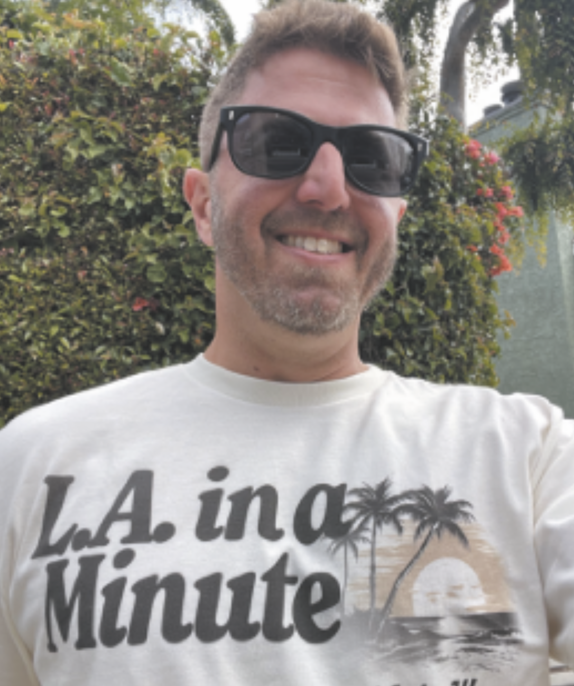

Evan Lovett
Evan Lovett is a proud son of Los Angeles. Born and raised in the San Fernando Valley, Lovett has become something of a pop historian who studies the city he's spent his life in.
In the cluttered world of online media and "content," Lovett has carved out a niche for himself as an informative and accessible voice sharing the rich history of Los Angeles.
Lovett's series is called L.A. in a Minute, and if you use Instagram or TikTok, there is a good chance you have seen his videos. The concept is simple: Lovett is going to teach you something about Los Angeles in roughly a minute. He opens most reports with his sign-on: "What is up? This is your LA in a minute..." followed by a brief explanation of the video's topic and often bookended with the phrase "Let's get into it." Then, Evan unloads one of his many nuggets of history.
Since starting the series in 2020, Lovett has become a sensation. With hundreds of thousands of followers across multiple platforms, Evan has been formally honored by the City of Los Angeles and made numerous appearances on local news and radio stations. If you love history or the city of Los Angeles I highly recommend following Lovett. I was thrilled when I finally got the chance to speak to Evan about his well-earned fame and success.
Gino Renzulli: What was your career background before starting L.A. in a Minute?
Evan Lovett: I am a journalist at heart. I was the Sports Editor for the Daily Bruin at UCLA and was fortunate enough to land a gig for the L.A. Times coming out of school. That said, there was not enough upside for a young 21-year-old covering sports in Orange County (and returning back to DTLA to file stories) and I entered the private sector, first in PR before landing in online advertising for a company called The Vendare Group. I was fortunate to land in that space - it was really the beginning of the modern internet - and had a career lasting 20+ years.
GR: Did you always love history?
EL: Great question. I did not like history class in school, but I was always interested in historical footnotes, tidbits, and trivia. As a youngster, I was obsessed with sports and could rattle off baseball stats going back to Wee Willie Keeler and Ty Cobb, and through the days of Don Mattingly and Kirby Puckett. My parents also instilled in me a love of L.A., and they would take me around the Venice boardwalk, Griffith Park, South Los Angeles, and Boyle Heights and regale me with their personal histories, which unlocked a greater appreciation for the history of the city as well.
GR: How has your perception of LA changed since starting the show and researching the city?
EL: Oh my gosh. I've always loved Los Angeles and luckily I had a great appreciation of its diversity and rich culture growing up in the San Fernando Valley. In my homeroom in junior high, I had an Egyptian classmate, a Kenyan classmate, Armenian, Korean, Jewish — and even then I knew that this was special. It was so fun going to my friends' homes and trying their family's foods and just seeing things that were different. With that as a foundation, my appreciation of Los Angeles is always viewed through the prism of the richness of culture here in L.A. — despite the fact that people have always said, "L.A. has no history in culture." Well, the truth is, you just need to look for it.
GR: What's one piece of LA history every Angeleno should know about?
EL: The Pobladores that founded El Pueblo de Nuestra Señora la Reina de los Ángeles on September 4, 1781, was a reflection of the city today; 44 families, including Mexicans, Spaniards, Indigenous people, Africans, and Filipinos.
GR: Was there anyone doing content like this that inspired you?
EL: I am inspired by the people of L.A. every day. I owe a debt of gratitude to Huell Howser, Art Laboe, Vin Scully, and Jonathan Gold, as their approach to the 'regular' people, spots, and neighborhoods of Los Angeles were so authentic, deep-rooted, and genuine, that subconsciously I see reflections of their work in what I try to accomplish each day.
GR: How long would you say one video takes to complete from inception to the end of editing?
EL: From research to script to rewriting to driving to filming to editing... about eight hours per video. It's definitely a labor of love. My friend compares each video to "doing a term paper" and that sounds about right.
GR: Are you recognized on the streets often?
EL: Honestly, now I am recognized on a daily basis. It's really neat to know that I'm able to make an impact in this city. It's not about me. It's about uncovering the pride that people have in their neighborhood and culture, and my ability to shine a positive light on this city really resonates.
GR: Finally, what does the future hold for LA in a Minute?
EL: I would like to publish my book, 100 Stories of L.A. In a Minute, and also have the opportunity to turn L.A. in a Minute into a full-length show on a streaming service or a local network. In the meantime, the goal is to continue growing while shining a positive light on all of Los Angeles!